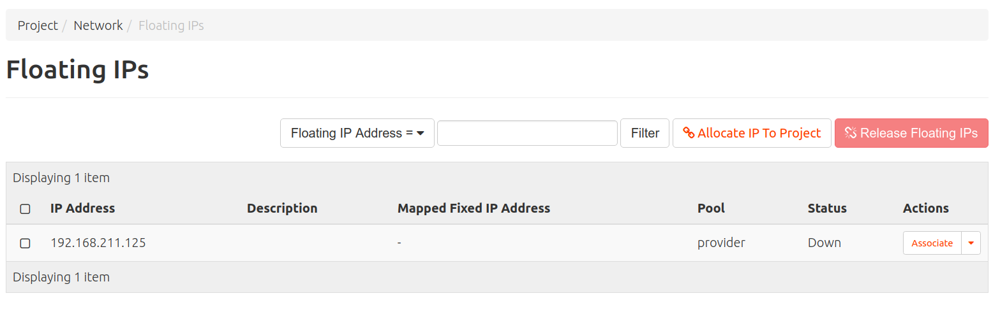
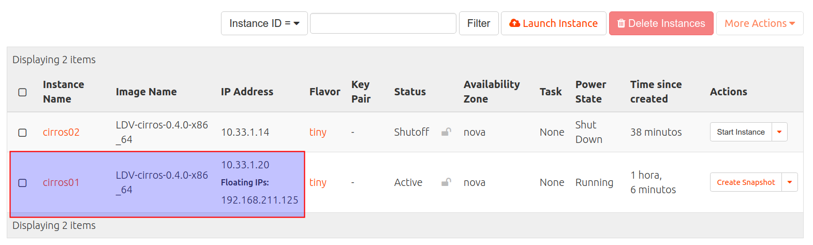
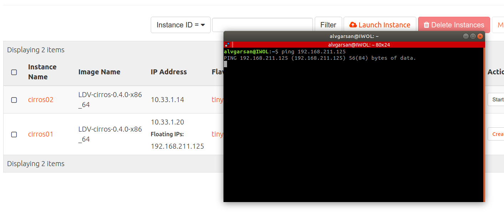
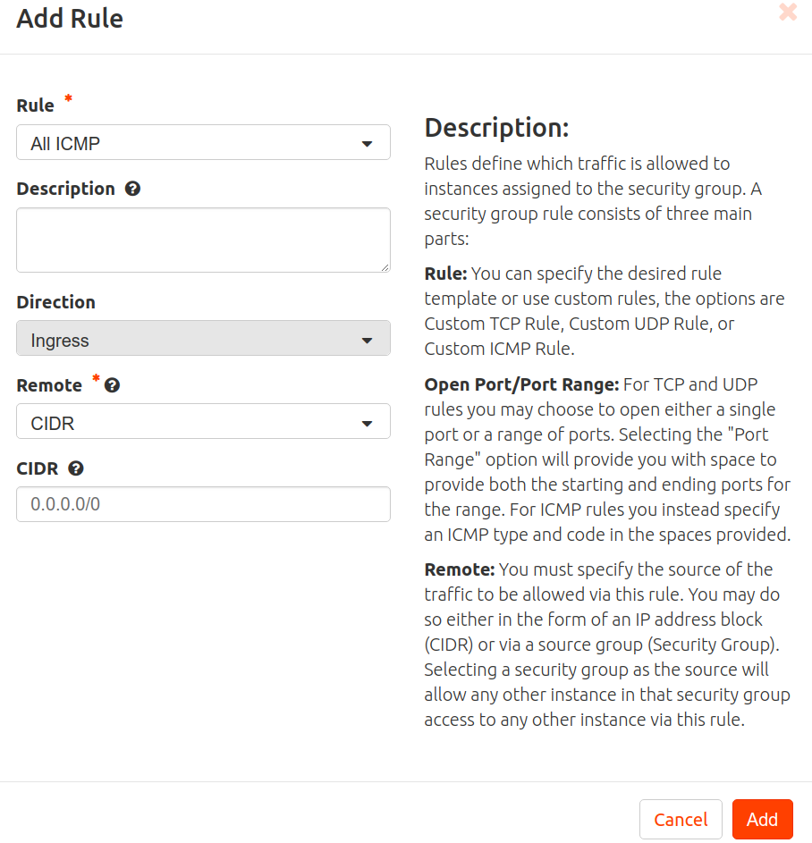
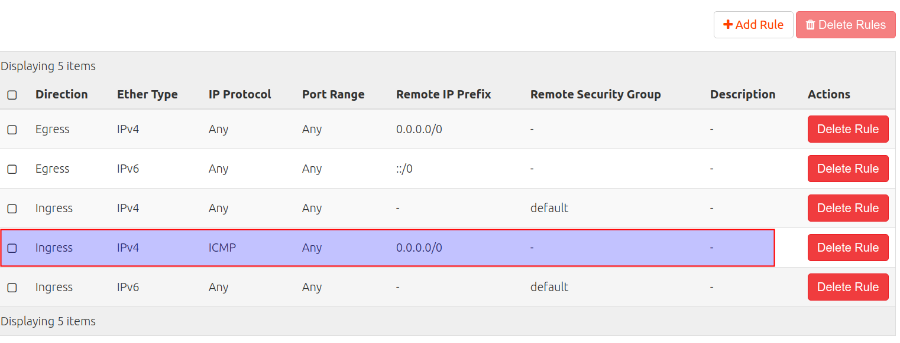
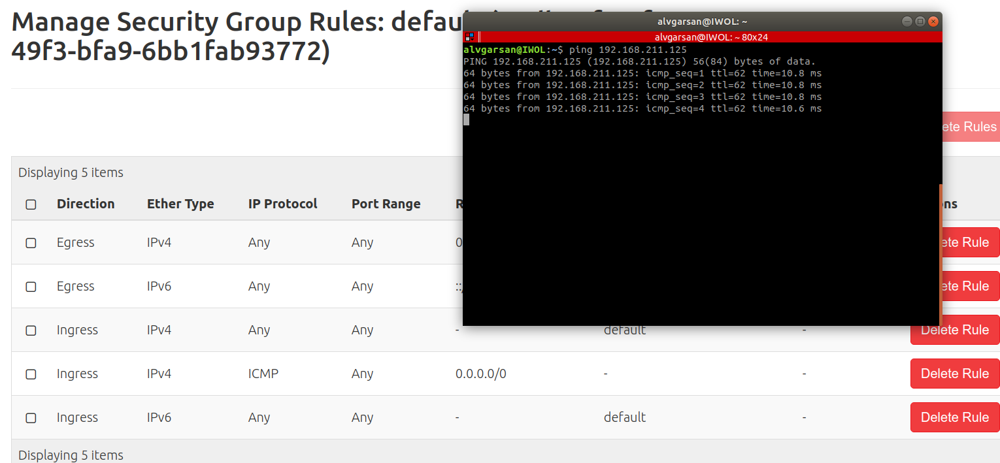
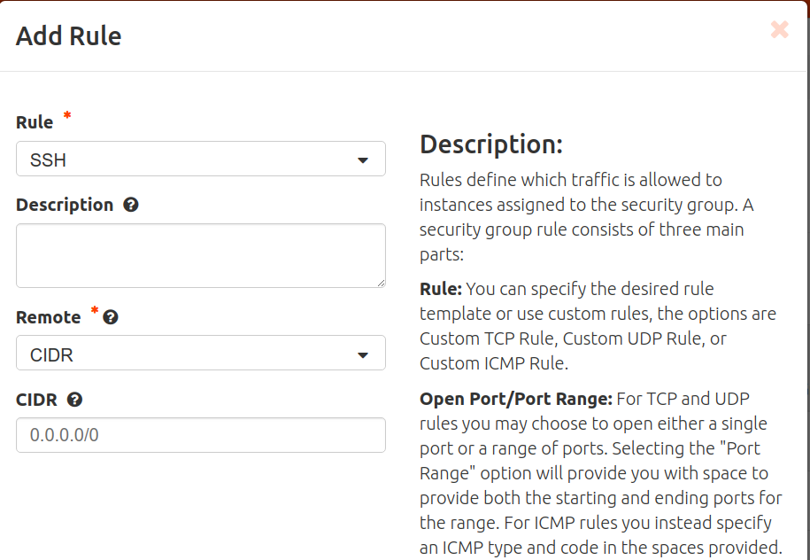
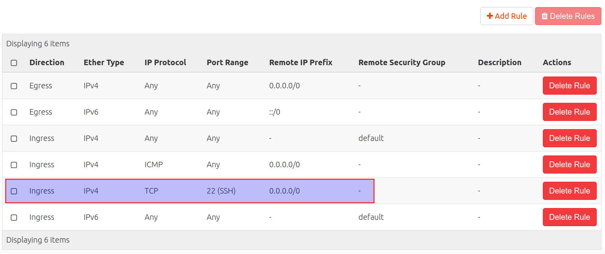
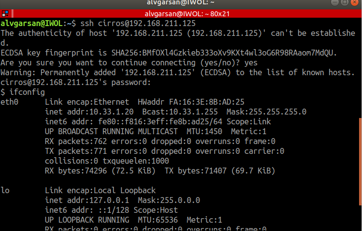

IPs flotantes y grupos de seguridad¶
Introducción¶
En esta actividad vamos a:
- Asociar una IP flotante a una de las instancias que has creado para poder acceder desde el exterior (red del instituto).
- Crear una nueva regla en el grupo de seguridad default para poder hacer ping a las instancias que pertenezcan a este grupo.
- Verificar que es posible hacer ping a la IP pública de la instancia.
- Crear una nueva regla en el grupo de seguridad default para poder acceder por SSH a las instancias que pertenezcan a este grupo.
- Establecer una conexión SSH con la instancia.
Consulta información sobre ips fijas e ips flotantes en la sección Conceptos.
Consulta información sobre grupos de seguridad en la sección Conceptos.
Configuración¶
IP Flotantes¶
Accede a Horizon e Inicia sesión con tu usuario y contraseña.
Accede a Project, Compute, Instances. Pincha sobre Start Instance en cirros01 para iniciar la instancia.
Accede a Project, Compute, Network, Floating IPs.
Haz clic sobre Allocate IP to Project para reservar una IPs flotante. Estás IPs en un cloud público serían direcciones de Internet. En nuestro caso son direcciones de la red provider (192.16.0.0/16), la red del instituto. 
Accede a Compute, Project, Instances. En la instancia cirros01 accede a Actions, Associate Floating IP. Selecciona la IP flotante a asociar el interfaz de red de la instancia con la que se asocia. Pincha en Associate.
Observa la IP asociada. 
Abre un terminal en tu equipo y haz un ping a la IP flotante.
Observa que no responde. 
Grupos de seguridad¶
Accede a Project, Network, Security Groups.
Observa las reglas del grupo default (por defecto permite todo el tráfico de salida y acepta tráfico ingress del grupo, pero rechaza todo el tráfico exterior que no proceda del grupo de seguridad default).
Sobre el grupo default pincha en Manage Rules.
Pincha en Add Rule y crea una regla para permitir el tráfico ICMP de entrada desde cualquier sitio.  
Abre un terminal en tu equipo y haz un ping a la IP flotante y observa que ahora sí responde. 
Pincha en Add Rule y crea una regla para permitir el tráfico SSH de entrada desde cualquier sitio.  
Abre un terminal y establece una conexión SSH con la instancia cirros01..
ssh cirros@ip_flotante
